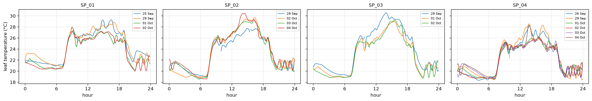
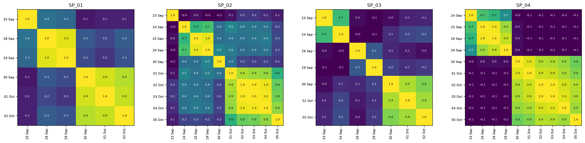
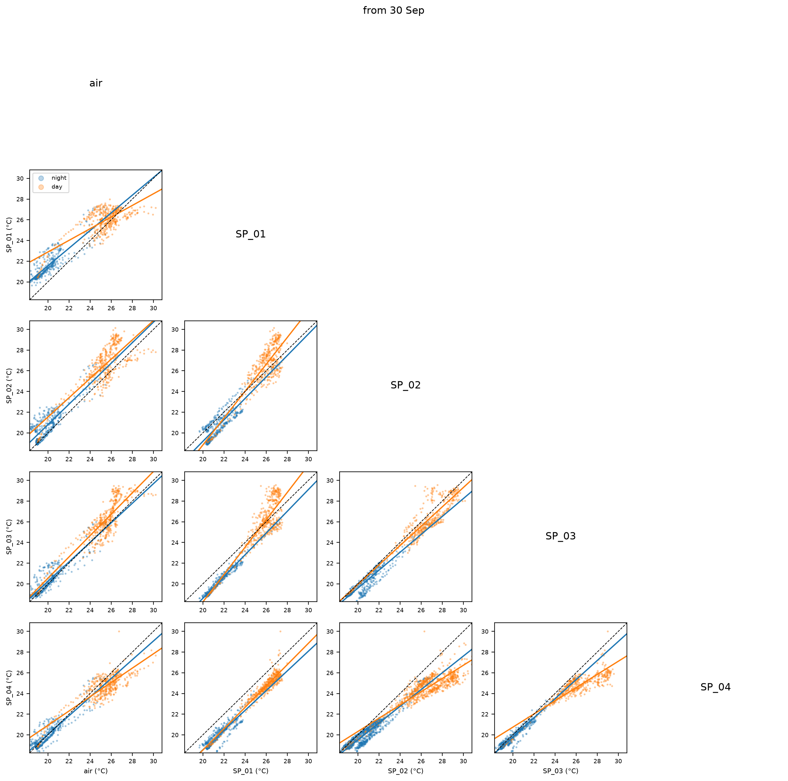

from fastcore.utils import *
from fastcore.test import *
from speaking_plants.clean import *Leaf temperature
Daily leaf temperature, its rate of change and leaf minus air temperature, per node
This module turns the measurements of clean into one leaf temperature series per node and day. Each thermal image also shows background, so a mask keeps only the leaf pixels: the pixels that vary most over time, since a leaf warms and cools more than its surroundings. From the masked pixels, each image gives one leaf temperature. Its rate of change, from a Savitzky-Golay filter, and its difference to air temperature are the signatures to compare across days and nodes.
Data
The input is one row per measurement, from measurements, with the Ruuvi readings of SP_01 shared with every node by share_ruuvi. The examples use batch 1, from data/b01/:
data = Path('../data/b01')
mdf = share_ruuvi(measurements(clean(read_logs(sorted(data.glob('dados_*.csv'))))))Full days
A day of measurements every 5 minutes has 288 of them. Only days close to that show the whole daily cycle, so the analysis keeps node-days with at least min_n measurements. Days run from midnight to midnight, local time.
full_days
def full_days(
df:pandas.DataFrame, # Output of `measurements`
min_n:int=280, # Fewest measurements for a full day
)->pandas.DataFrame: # One row per full day, with `node_id` and `day`Node-days with at least min_n measurements
days = full_days(mdf)
days.assign(v='✓').pivot(index='day', columns='node_id', values='v').fillna('')| node_id | SP_01 | SP_02 | SP_03 | SP_04 |
|---|---|---|---|---|
| day | ||||
| 2026-09-25 | ✓ | |||
| 2026-09-26 | ✓ | |||
| 2026-09-29 | ✓ | ✓ | ✓ | ✓ |
| 2026-10-01 | ✓ | ✓ | ✓ | |
| 2026-10-02 | ✓ | ✓ | ✓ | ✓ |
| 2026-10-03 | ✓ | ✓ | ||
| 2026-10-04 | ✓ | ✓ |
Leaf masks
The standard deviation of each pixel over time maps where the temperature moves. top_mask keeps the pixels above the q quantile of that map, so q=0.9 keeps the 10% that vary most. Pixels that clean set to missing are ignored.
top_mask
def top_mask(
sd:numpy.ndarray, # Output of `std_map`
q:float=0.9, # Quantile above which a pixel counts as leaf
)->numpy.ndarray: # Boolean, same shape as `sd`Pixels whose standard deviation is above the q quantile
std_map
def std_map(
df:pandas.DataFrame, # Rows of `measurements` output
)->numpy.ndarray: # Shape `(24, 32)`, standard deviation of each pixel over the rowsStandard deviation of each pixel over time
A mask can come from each day or from a node’s whole batch. A daily mask follows the leaf if the plant or the camera moves, but a day with little temperature variation may pick up background. A batch mask is the same for every day of a node, which keeps the days comparable. A batch mask is only valid while the camera scene stays the same, as the section on scene changes explains. no_masks keeps every pixel. Its profile is the reference, since a mask is only useful if it changes the result compared with all pixels. All three functions return a mask per node-day, and the rest of the analysis takes any of them:
no_masks
def no_masks(
days:pandas.DataFrame, # Output of `full_days`
)->dict: # All-pixel mask per `(node_id, day)`Masks that keep every pixel, for the unmasked profile
batch_masks
def batch_masks(
df:pandas.DataFrame, # Output of `measurements`
days:pandas.DataFrame, # Output of `full_days`
q:float=0.9, # Quantile above which a pixel counts as leaf
)->dict: # Mask per `(node_id, day)`, from all of the node's imagesOne leaf mask per node, from all its images, repeated for each of its days
daily_masks
def daily_masks(
df:pandas.DataFrame, # Output of `measurements`
days:pandas.DataFrame, # Output of `full_days`
q:float=0.9, # Quantile above which a pixel counts as leaf
)->dict: # Mask per `(node_id, day)`, from that day's imagesOne leaf mask per node-day, from that day
dm, bm = daily_masks(mdf, days), batch_masks(mdf, days)Leaf temperature series
leaf_series reduces each image to the median of its masked pixels, the leaf temperature t_leaf. It puts each node-day on a regular grid with a step of step, so a missing measurement is a missing value rather than a longer interval. slope then smooths and differentiates the series with a Savitzky-Golay filter, in °C per minute. The filter needs equally spaced values, so it runs on each stretch without missing values, and stretches shorter than window get no slope. With a 5-minute step, the default window of 9 spans 45 minutes. smooth uses the same filter without differentiating, for the t_smooth and dt_smooth columns. Its default window of 13 spans 1 hour. That removes the fluctuations of a few minutes that appear in daytime only and on all nodes at once, most likely changes in sunlight.
slope
def slope(
s:pandas.Series, # Output of `regular`
window:int=9, # Points in the Savitzky-Golay window
polyorder:int=3, # Order of the fitted polynomial
)->pandas.Series: # Rate of change per minute, missing on stretches shorter than `window`Smoothed first derivative of a regular series
smooth
def smooth(
s:pandas.Series, # Output of `regular`
window:int=13, # Points in the Savitzky-Golay window
polyorder:int=3, # Order of the fitted polynomial
)->pandas.Series: # Smoothed values, missing on stretches shorter than `window`Smoothed regular series
regular
def regular(
s:pandas.Series, # Values indexed by time
step:str='5min', # Grid step
)->pandas.Series: # Values on a grid from the first time, missing where no value is within half a stepPut a time series on a regular grid
t = pd.date_range('2026-10-01', periods=30, freq='5min')
s = regular(pd.Series(2. * np.arange(30), index=t + pd.Timedelta('1s')))
test_close(slope(s).to_numpy(), np.full(30, 0.4))
test_close(smooth(s).to_numpy(), s.to_numpy())Transpiration is driven by the vapour pressure deficit (VPD): the gap between the vapour pressure of saturated air at the air temperature and the actual vapour pressure. A plant that transpires well cools more below the air as VPD rises. vpd computes it in kPa from the Ruuvi temperature and relative humidity, with the Tetens formula for the saturation vapour pressure, and leaf_series adds it as the vpd column.
vpd
def vpd(
t, # Air temperature (°C)
rh, # Relative humidity (%)
):Vapour pressure deficit, with the Tetens formula for the saturation vapour pressure
At 25 °C, saturated air holds 3.17 kPa of water vapour. Air at 60% relative humidity then has a deficit of 1.27 kPa:
test_close(vpd(25, 60), 1.267, eps=1e-3)
test_eq(vpd(20, 100), 0)leaf_series
def leaf_series(
df:pandas.DataFrame, # Output of `share_ruuvi`
masks:dict, # Output of `daily_masks`, `batch_masks` or `no_masks`
step:str='5min', # Grid step
window:int=9, # Points in the Savitzky-Golay window of `slope`
polyorder:int=3, # Order of the fitted polynomial
smooth_window:int=13, # Points in the smoothing window of `t_smooth` and `dt_smooth`
)->pandas.DataFrame: # One row per grid time and node-dayLeaf temperature, air temperature and VPD, leaf minus air, raw and smoothed, and the leaf slope, per node-day
ls = leaf_series(mdf, no_masks(days))
ls.head()| time | node_id | day | hour | t_leaf | t_smooth | t_air | vpd | dt_leaf_air | dt_smooth | slope | |
|---|---|---|---|---|---|---|---|---|---|---|---|
| 0 | 2026-09-25 00:00:00 | SP_01 | 2026-09-25 | 0.000000 | 22.045 | 22.023571 | NaN | NaN | NaN | NaN | -0.010531 |
| 1 | 2026-09-25 00:05:00 | SP_01 | 2026-09-25 | 0.083333 | 21.955 | 21.999945 | 19.94 | 1.129395 | 2.015 | NaN | -0.006806 |
| 2 | 2026-09-25 00:10:00 | SP_01 | 2026-09-25 | 0.166667 | 21.980 | 21.973666 | 19.93 | 1.127066 | 2.050 | NaN | -0.004375 |
| 3 | 2026-09-25 00:15:00 | SP_01 | 2026-09-25 | 0.250000 | 21.960 | 21.945749 | 19.91 | 1.126601 | 2.050 | NaN | -0.003236 |
| 4 | 2026-09-25 00:20:00 | SP_01 | 2026-09-25 | 0.333333 | 21.935 | 21.917208 | NaN | NaN | NaN | NaN | -0.003391 |
hour is the time of day, which lines days up on one axis. plot_panels draws one panel per value of panel and one line per value of line:
plot_panels
def plot_panels(
df:pandas.DataFrame, # Output of `leaf_series`
col:str, # Column to plot against `hour`
panel:str='node_id', # Column with one panel per value
line:str='day', # Column with one line per value
ylabel:str=None, # Label of the y axis, `col` by default
title:str='', # Prefix of each panel title
):Plot col against time of day, one panel per panel value and one line per line value
plot_panels(ls, 't_smooth', ylabel='leaf temperature (°C)')
Daylight
Day and night follow sunrise and sunset, which shift by a few minutes each day. sun_times gets them from astral for a site. The default site is Seibersdorf, Austria, where the preliminary experiment ran. The times are Austrian local time, like time in the logs.
is_day
def is_day(
times, # Local times
loc:astral.LocationInfo=LocationInfo(name='Seibersdorf', region='Austria', timezone='Europe/Vienna', latitude=47.976, longitude=16.508), # Site of the greenhouse
)->numpy.ndarray: # True from sunrise to sunsetWhether each time is in daylight
sun_times
def sun_times(
times, # Times or days, local time
loc:astral.LocationInfo=LocationInfo(name='Seibersdorf', region='Austria', timezone='Europe/Vienna', latitude=47.976, longitude=16.508), # Site of the greenhouse
)->pandas.DataFrame: # One row per day, with dawn, sunrise, noon, sunset and dusk in local timeSun events for each day in times
st = sun_times(pd.date_range('2026-09-23', '2026-10-05'))
test_eq(f"{st.sunrise.iloc[0]:%H:%M}-{st.sunset.iloc[0]:%H:%M}", '06:42-18:49')
test_eq(is_day(pd.to_datetime(['2026-09-30 03:00', '2026-09-30 06:30', '2026-09-30 07:00', '2026-09-30 18:30', '2026-09-30 18:40'])), [False, False, True, True, False])
st.apply(lambda s: s.dt.strftime('%H:%M'))| dawn | sunrise | noon | sunset | dusk | |
|---|---|---|---|---|---|
| day | |||||
| 2026-09-23 | 06:10 | 06:42 | 12:46 | 18:49 | 19:21 |
| 2026-09-24 | 06:11 | 06:43 | 12:46 | 18:47 | 19:19 |
| 2026-09-25 | 06:13 | 06:44 | 12:45 | 18:45 | 19:17 |
| 2026-09-26 | 06:14 | 06:46 | 12:45 | 18:43 | 19:15 |
| 2026-09-27 | 06:16 | 06:47 | 12:45 | 18:41 | 19:12 |
| 2026-09-28 | 06:17 | 06:48 | 12:44 | 18:39 | 19:10 |
| 2026-09-29 | 06:18 | 06:50 | 12:44 | 18:37 | 19:08 |
| 2026-09-30 | 06:20 | 06:51 | 12:44 | 18:35 | 19:06 |
| 2026-10-01 | 06:21 | 06:53 | 12:43 | 18:33 | 19:04 |
| 2026-10-02 | 06:23 | 06:54 | 12:43 | 18:31 | 19:02 |
| 2026-10-03 | 06:24 | 06:55 | 12:43 | 18:29 | 19:00 |
| 2026-10-04 | 06:25 | 06:57 | 12:42 | 18:27 | 18:58 |
| 2026-10-05 | 06:27 | 06:58 | 12:42 | 18:25 | 18:56 |
Scene changes
A camera that is moved, or a plant that is moved or replaced, changes what each pixel sees. Masks, biases and fitted lines are only valid within a stretch of days with the same scene. scene_similarity compares the daily standard deviation maps of each node. Two days with the same scene correlate highly. A low correlation between neighbouring days points to a change between them. Days with fewer than min_n measurements are left out, because a partial day covers only part of the daily cycle and its map is less reliable.
plot_scene_similarity
def plot_scene_similarity(
sim:dict, # Output of `scene_similarity`
):One heatmap per node of the correlation between its days
scene_similarity
def scene_similarity(
df:pandas.DataFrame, # Output of `measurements`
min_n:int=144, # Fewest measurements for a day to be compared
)->dict: # Correlation matrix of daily standard deviation maps, per nodeCorrelation between the daily standard deviation maps of each node
In batch 1, all four nodes change on 30 September. SP_01 also changes across the outage from 25 to 28 September. SP_03 has no stable stretch before 30 September, and the 23 September map of SP_02 matches none of its other days:
plot_scene_similarity(scene_similarity(mdf))
The analysis of a batch records the dates of its scene changes. periods turns them into filters for time-indexed tables, one per stretch with the same scene. Each period starts at a change date and ends before the next one:
periods
def periods(
bounds:tuple=(), # Dates of scene changes
)->dict: # Filter per period, for tables indexed by timeSplit a time-indexed table at each date in bounds
w = pd.DataFrame({'a': range(9)}, index=pd.date_range('2026-09-28', periods=9, freq='12h'))
ps = periods(['2026-09-30'])
test_eq(list(ps), ['before 30 Sep', 'from 30 Sep'])
test_eq([len(f(w)) for f in ps.values()], [4, 5])
test_eq(list(periods()), ['all'])Comparing nodes
node_table puts one column of leaf_series output side by side for all nodes. All nodes measure on the same 5-minute grid to within a second. Rounding times to 5 minutes therefore aligns them:
node_table
def node_table(
df:pandas.DataFrame, # Output of `leaf_series`
col:str, # Column to tabulate
)->pandas.DataFrame: # One column per node, indexed by time rounded to 5 minutesOne column per node on a shared 5-minute time index
Over all hours, nights and days form two clusters, and a line fitted through two clusters mostly measures the gap between them. Comparisons are therefore made within each regime. regimes splits a time-indexed table into day, from sunrise to sunset, and night. combine crosses regimes with the periods of a batch:
combine
def combine(
periods:dict, # Output of `periods`
regimes:dict={'night': <function <lambda> at 0x7f96cbc15800>, 'day': <function <lambda> at 0x7f96cbc15580>}, # Filter per regime
)->dict: # Filter per regime and periodFilters for each regime within each period
A correlation says whether two series move together, not whether they agree. pair_stats gives, for each pair of columns and each group of times, the bias (the mean of y minus x), the line fitted to y against x, and the correlation. A slope of 1 means both see the same swing. Groups with fewer than 3 shared values are skipped:
pair_stats
def pair_stats(
w:pandas.DataFrame, # Output of `node_table`, optionally with an `air` column
groups:dict, # Filter per group of times, such as the output of `combine`
)->pandas.DataFrame: # One row per pair and groupBias, fitted line and correlation of y against x, for each pair of columns of w and each group
t = pd.date_range('2026-10-01', periods=48, freq='h')
w = pd.DataFrame({'a': np.arange(48.)}, index=t).assign(b=lambda d: 2 * d.a + 1)
st = pair_stats(w, {'all': lambda w: w})
test_eq(st[['bias', 'slope', 'intercept', 'r']].iloc[0].tolist(), [24.5, 2.0, 1.0, 1.0])scatter_matrix plots each pair of columns against each other, one colour and one fitted line per group. The dashed line is 1:1:
scatter_matrix
def scatter_matrix(
w:pandas.DataFrame, # Output of `node_table`, optionally with an `air` column
groups:dict={'night': <function <lambda> at 0x7f96cbc15800>, 'day': <function <lambda> at 0x7f96cbc15580>}, # Filter per group of times
label:str='°C', # Unit of the axes
title:str='', # Figure title
):Pairwise scatter plots of the columns of w, with one fitted line per group
For example, the unmasked leaf temperature of each node in batch 1 against air temperature and the other nodes, from the scene change on 30 September:
us = leaf_series(mdf, no_masks(full_days(mdf, min_n=13)))
tl = node_table(us, 't_leaf')
tl.insert(0, 'air', node_table(us, 't_air').mean(axis=1))
after = periods(['2026-09-30'])['from 30 Sep']
scatter_matrix(after(tl), title='from 30 Sep')
pair_stats(tl, combine(periods(['2026-09-30']))).query("x == 'air'")
| x | y | group | n | bias | slope | intercept | r | |
|---|---|---|---|---|---|---|---|---|
| 0 | air | SP_01 | night, before 30 Sep | 322 | 2.20 | 0.93 | 3.62 | 0.94 |
| 1 | air | SP_01 | day, before 30 Sep | 400 | 0.92 | 0.70 | 8.73 | 0.77 |
| 2 | air | SP_01 | night, from 30 Sep | 393 | 1.54 | 0.85 | 4.47 | 0.87 |
| 3 | air | SP_01 | day, from 30 Sep | 438 | 0.57 | 0.56 | 11.63 | 0.76 |
| 4 | air | SP_02 | night, before 30 Sep | 280 | 0.57 | 0.97 | 1.15 | 0.91 |
| 5 | air | SP_02 | day, before 30 Sep | 318 | 0.20 | 0.84 | 4.28 | 0.89 |
| 6 | air | SP_02 | night, from 30 Sep | 394 | 0.79 | 0.99 | 0.98 | 0.87 |
| 7 | air | SP_02 | day, from 30 Sep | 413 | 1.17 | 0.93 | 2.88 | 0.82 |
| 8 | air | SP_03 | night, before 30 Sep | 271 | 0.47 | 0.92 | 2.17 | 0.89 |
| 9 | air | SP_03 | day, before 30 Sep | 311 | 0.90 | 0.97 | 1.64 | 0.79 |
| 10 | air | SP_03 | night, from 30 Sep | 394 | 0.23 | 0.94 | 1.34 | 0.90 |
| 11 | air | SP_03 | day, from 30 Sep | 438 | 0.71 | 1.03 | -0.09 | 0.88 |
| 12 | air | SP_04 | night, before 30 Sep | 314 | -0.37 | 0.90 | 1.58 | 0.92 |
| 13 | air | SP_04 | day, before 30 Sep | 300 | -0.49 | 0.80 | 4.60 | 0.76 |
| 14 | air | SP_04 | night, from 30 Sep | 392 | 0.03 | 0.90 | 1.98 | 0.91 |
| 15 | air | SP_04 | day, from 30 Sep | 436 | -0.71 | 0.69 | 7.10 | 0.86 |
Daily fits
A fit over several days averages away a change in how a plant follows its surroundings, and water stress is such a change. A leaf that transpires well warms more slowly than the air during the day. Its daytime slope against air is below 1. When its stomata close, the slope moves towards 1 and the intercept rises. At night the stomata are mostly closed. Night fits are then a reference for the same plant.
peers gives, for each node, the mean of the other nodes. It is a reference that needs no air sensor and that cancels the shared greenhouse climate, as long as most plants are not stressed.
peers
def peers(
w:pandas.DataFrame, # Output of `node_table`
)->pandas.DataFrame: # Same shape as `w`Mean of the other columns, for each column
daily_fits fits a line through each node against a reference, for each day and regime. The reference is one series shared by all nodes, such as air temperature, or a table with one column per node, such as the output of peers. A night takes the date of the evening it starts: the night of 5 October runs from sunset on 5 October to sunrise on 6 October. The bias is the mean of the node minus the reference, as in pair_stats. The intercept is the fitted value at a reference of 0, far outside the data, and it moves with the slope. The fit is ordinary least squares. Noise in the reference pulls the slope towards 0, more against peers than against air. This effect is about the same every day, and changes over days remain comparable.
daily_fits
def daily_fits(
w:pandas.DataFrame, # Output of `node_table`
x, # Reference: a series shared by all nodes, or a table with the columns of `w`
min_n:int=24, # Fewest points for a fit
)->pandas.DataFrame: # One row per node, day and regimeBias, slope, intercept and correlation of each node against x, per day and regime
A synthetic node that follows the air with a slope of 0.5 by day and 1 by night:
t = pd.date_range('2026-10-01', '2026-10-03', freq='5min', inclusive='left')
air = pd.Series(15 + 5 * np.sin(2 * np.pi * (t.hour + t.minute / 60 - 9) / 24), index=t)
w = pd.DataFrame(dict(a=np.where(is_day(t), 0.5 * air + 8, air)), index=t)
fits = daily_fits(w, air)
test_close(fits.slope.to_numpy(), np.where(fits.regime == 'day', 0.5, 1.))
fits.round(dict(bias=2, slope=2, intercept=2, r=2))| node_id | day | regime | n | bias | slope | intercept | r | |
|---|---|---|---|---|---|---|---|---|
| 0 | a | 2026-09-30 | night | 83 | 0.00 | 1.0 | 0.0 | 1.0 |
| 1 | a | 2026-10-01 | day | 140 | -0.85 | 0.5 | 8.0 | 1.0 |
| 2 | a | 2026-10-01 | night | 148 | 0.00 | 1.0 | 0.0 | 1.0 |
| 3 | a | 2026-10-02 | day | 140 | -0.85 | 0.5 | 8.0 | 1.0 |
| 4 | a | 2026-10-02 | night | 65 | 0.00 | 1.0 | -0.0 | 1.0 |